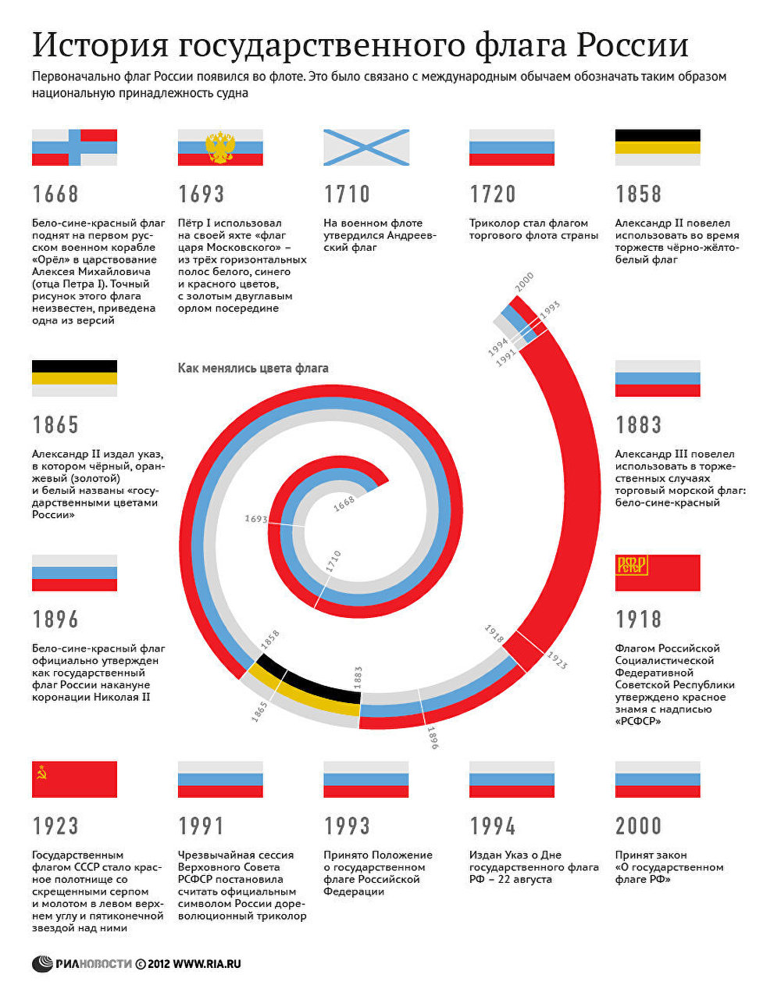

История флагов
История государственного флага России Российский триколор имеет более чем 300‑летнюю историю. Государственный флаг в России появился на рубеже XVII‑XVIII веков, в эпоху становления России как мощного государства. Впервые бело‑сине‑красный флаг был поднят на первом русском военном корабле "Орел", в царствование отца Петра I Алексея Михайловича. Законным же "отцом" триколора признан Петр I. 20 января 1705 года он издал указ, согласно которому "на торговых всяких судах" должны поднимать бело‑сине‑красный флаг, сам начертал образец и определил порядок горизонтальных полос. В 1858 году император Александр II утвердил рисунок "с расположением гербовых черно‑желто‑белого цветов империи на знаменах, флагах и других предметах для украшений на улицах при торжественных случаях". А 1 января 1865 года вышел именной указ Александра II, в котором цвета черный, оранжевый (золотой) и белый уже прямо названы "государственными цветами России". В Советской России более 70 лет государственным флагом являлся красный стяг. Чрезвычайная сессия Верховного Совета РСФСР 22 августа 1991 года постановила считать официальным символом России триколор. Указом президента РФ от 11 декабря 1993 года было утверждено Положение о государственном флаге Российской Федерации. 25 декабря 2000 года президент РФ Владимир Путин подписал федеральный конституционный закон "О Государственном флаге Российской Федерации". В соответствии с законом, Государственный флаг РФ представляет собой прямоугольное полотнище из трех равновеликих горизонтальных полос: верхней — белого, средней — синего и нижней — красного цвета. Отношение ширины флага к его длине — 2:3.
Нынешний флаг

История государственного флага Российской Федерации: что обозначают его цвета До начала 17 века в нашей стране не было государственного стяга. Алексей Михайлович, правитель династии Романовых, предвосхитивший интенсивную деятельность Петра I в этом направлении, руководил строительством русского флота. Когда специалист по кораблестроительному делу, голландец Давид Бутлер создал первое военное судно «Орёл», он попросил знамя, который будет поднят по этому поводу. Согласно традициям западных государств, корабль должен был быть отмечен каким-нибудь знаменем. Растерявшийся царь поинтересовался мнением иностранных мастеров и те предложили тот вариант, который был принят у них на родине. Он выглядел как разноцветное полосатое полотно, части которого были красного, белого и синего цветов. Расцветка повторяла ту, что была на гербе столицы, это понравилось Алексею Михайловичу и он внял подсказке, заказав для кораблей полотнища этих оттенков. флаг России Символика современного российского флага в то время означала следующее.
Белый цвет в это время был символом свободы.
Синий традиционно связывался с образом Богоматери, покровительствующей защитникам Русской земли.
Красный ассоциировался с мужеством и храбростью тех, кто готов погибнуть за родину.